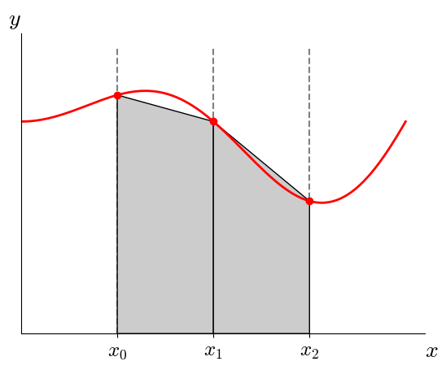

Midterm 2#
Let’s create and work with a vector.
Give a single line of code that creates a vector of double precision numbers with the initial entries:
0.5,1.5,2.5, and3.5. Call your vectorvec.solution
std::vector<double> vec{0.5, 1.5, 2.5, 3.5};
How do we add a new element,
4.5, to the end of the vector?solution
vec.push_back(4.5);
How can I access the last value
vecholds, regardless of how many entries it has?solution
We could do:
auto e = vec.back();
or
auto e = vec[vec.size()-1];
structs
Write the code that creates a
structcalledemployeethat has 2 components: a string callednameand an integer calledid.solution
struct employee { std::string name; int id; };
Now give the code that creates a vector of this
employeecalledpersonnel, and initialize it with 2 elements:name:
Bob; id:1name:
Jane; id2
solution
std::vector<employee> personnel{{.name="Bob", .id=1}, {.name="Jane", id=2}};
Given an
employeenamedp}, show the code that tests if theidis larger 100, and if so outputs:large id detected.solution
if (p.id > 100) { std::cout << "large id detected" << std::endl; }
Formatting. Consider the following code (in a file
test.cpp):#include <iostream> #include <format> int main() { int x{2}; int y{4}; std::cout << std::format("x = {}, y = {}\n", x, y); }
This fails to compile with:
g++ -o test test.cpp
and complains about
std::format—what is missing from the compilation command?solution
We need to enable support for C++20 via
-std=c++20.What is the meaning of the
\n?solution
This is the newline escape code.
Understanding code. For each of the code snippets below, write what you expect the output to be:
int i{2}; int &j = i; j = 4; std::cout << i << std::endl; std::cout << j << std::endl;
solution
Here,
jis a reference toi. This outputs:4 4
int a{9}; int b{15}; if (a % 2 == 0 || b % 5 == 0) { std::cout << "divisible" << std::endl; } else { std::cout << "not divisible" << std::endl; }
solution
This is an or operation (
||), and sinceb % 5 = 0, we will outputdivisible.
Looping over vectors. You have a
std::vectorofdoublenamedvec. Give the lines of code that loop over all of the elements invecand modifies them to be twice their value. At the end of the loop, the elements ofvecshould reflect this change.solution
for (auto &e : vec) { e *= 2; }
The key here is to use a reference to access the elements.
Functions I. Write a function that takes a double precision floating point number
xand an integeraand returns the product \(a x\), as a double precision number.solution
double f(double x, int a) { return a * x; }
Functions II. Write a function that takes an argument
xand updates the value passed in to be twice its value. The function has no return value—xis updated via the argument list.solution
void f(double &x) { x *= 2; }
Note: I didn’t specify the type of
x, so you could have usedinthere.Functions and conditionals. Write a function called
contains_zerothat takes a vector of integers as a const-reference and returnstrueif any of the elements are zero. Otherwise it returnsfalse.solution
bool contains_zero(const std::vector<int>& vec) { for (auto e : vec) { if (e == 0) { return true; } } return false; }
Functional functions. Consider this function:
double apply(double x, std::function<double(double)> f) { // do stuff }
What is the meaning of the second argument? Give an example of something you could pass in there.
solution
The second argument indicates that we take a function of the form:
double f(double x) { ... }
So we could pass in:
double f(double x) { return x * x; }
for example.
Numerical methods.
In 2-3 sentences, explain the difference between round-off error and truncation error.
solution
Roundoff is the error that the computer makes in representing a real number with a finite-number of bits.
Truncation error is the error we make when we drop high-order terms in a Taylor series when deriving a numerical algorithm.
Imagine we have 3 equally-spaced points sampling a function \(f(x)\): \((x_0, f_0)\), \((x_1, f_1)\), \((x_2, f_2)\). With the aid of a diagram, explain how we find the integral of \(f(x)\) from \(x_0\) to \(x_2\) using the trapezoid rule.
Your diagram should draw the points and what the approximation to the integral looks like.
solution
We have something like this:

here, we have 2 intervals defined by the three points, and the approximation to the integral is just the sum of the area of each shaded region. These are trapezoids.